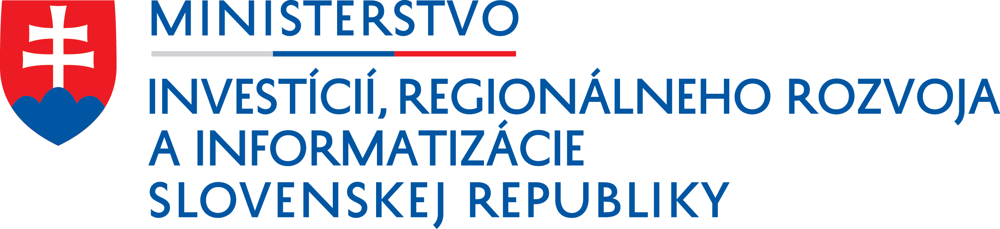

Podpora podnikania
Inovácia výrobného procesu v drevovýrobe
Efektívne využitie drevnej hmoty zavedením výroby suchých hranolov, škárovky a palivových brikiet
Realizované s finančnou podporou Úradu podpredsedu vlády SR pre investície a informatizáciu – program Podpora najmenej rozvinutých okresov.
Projekt je financovaný vďaka finančnej podpore z Európskeho fondu regionálneho rozvoja.
| Aktivita projektu | Podpora podnikania v poľnohospodárstve – obstaranie technológií a iné výdavky súvisiace s realizáciou projektu |
|---|---|
| Prijímateľ | Mlat s.r.o., Lipová 275/38, 985 26 Málinec |
| Miesto realizácie | Región (NUTS II): Stredné Slovensko · Vyšší územný celok (NUTS III): Banskobystrický kraj · Okres (NUTS IV): Poltár · Obec: Málinec |
| Výška poskytnutého NFP | 176 263 EUR |
| Realizácia projektu | 6/2018 – 1/2019 |
Popis projektu
Cieľom projektu je zvýšenie konkurencieschopnosti spoločnosti zakúpením novej technológie na prevádzku drevovýroby. Technológia prevádzky drevovýroby obsahuje horizontálnu kmeňovú pásovú pílu, profilovaciu a hobľovaciu frézu, kotol na štiepku, teplovzdušnú sušiareň a briketovací lis.
Táto technológia zabezpečí rozšírenie výroby o nové produkty (suché dosky, hranoly, prizmy) a zároveň využitie drevného odpadu na výrobu škárovky a palivových brikiet. Projektom je zabezpečená inovácia produktu, a zároveň aj inovácia procesu.
Zavedením novej technológie sa rozšíril objem výroby, zvýšila sa produktivita práce, efektívnosť výroby a pridaná hodnota. Na trh boli zavedené nové výrobky (suché drevo – hranoly, prizmy, škárovky a palivové brikety) a spoločnosť vytvorila 4 nové pracovné miesta pre osoby zo znevýhodnených sociálnych skupín.
Priebežne aktualizované informácie o projekte
Hlavná aktivita projektu začala v mesiaci 6/2018 po realizácii a kontrole procesu verejného obstarávania a po podpise zmluvy s víťazným uchádzačom na dodanie horizontálnej kmeňovej pásovej píly. Bola ukončená 11. 1. 2019 dodaním posledného technologického celku – kotla na spaľovanie biomasy.
Všetky stroje a zariadenia boli dodané v súlade s podmienkami dodania uvedenými v podpísaných kúpnych zmluvách, po dodaní boli vyfakturované a dodané spoločnosti Mlat s.r.o. Po dodaní boli zaradené do majetku spoločnosti, nainštalované a začala sa výroba. K termínu ukončenia projektu boli vytvorené 4 nové pracovné miesta, ktoré boli obsadené a preobsadené osobami zo znevýhodnených skupín. Spoločnosť začala zavedením nových technologických celkov vyrábať tri nové druhy výrobkov – brikety, suché hranoly a škárovku.
Nákup všetkých technologických celkov prebiehal postupne z príspevku v zmysle zmluvy o NFP formou predfinancovania a úhradou zálohovej platby. Spolufinancovanie bolo zabezpečené z vlastných zdrojov spoločnosti Mlat s.r.o.
V súčasnosti spoločnosť Mlat s.r.o. pokračuje vo svojej činnosti, využíva zakúpenú technológiu a vyrába deklarované výrobky. Spoločnosť ďalej investovala do nákupu ďalších zariadení a rozširuje svoje výrobné kapacity.
Ďalšie informácie
